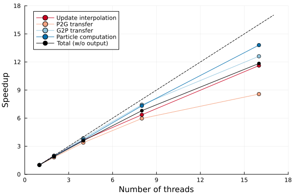

Multi-threading simualtion
| # Particles | # Iterations | Execution time (w/o output) |
|---|---|---|
| 1.5M | 1.8k | 6 min (8 threads) |
This example simulates a Taylor impact test using multi-threading.
using Tesserae
using StableRNGs
using TimerOutputs
function vonmises_model(Cᵖⁿ⁻¹, ε̄ᵖⁿ, F; λ, μ, H, τ̄y⁰)
κ = λ + 2μ/3 # Bulk modulus
J = det(F) # Jacobian
p = κ * log(J) / J # Pressure
bᵉᵗʳ = symmetric(F * Cᵖⁿ⁻¹ * F') # Trial left Cauchy-Green tensor
vals, vecs = eigen(bᵉᵗʳ) # Eigenvalue decomposition
λᵉᵗʳ = sqrt.(vals) # Trial stretches
nᵗʳₐ = (vecs[:,1], vecs[:,2], vecs[:,3]) # Principal directions
τ′ᵗʳ = @. 2μ*log(λᵉᵗʳ) - 2μ/3*log(J) # Trial Kirchhoff stress
f(τ) = sqrt(3τ⋅τ/2) - (τ̄y⁰ + H*ε̄ᵖⁿ) # Yield function
dfdσ, fᵗʳ = gradient(f, τ′ᵗʳ, :all)
if fᵗʳ > 0
ν = τ′ᵗʳ / (sqrt(2/3) * norm(τ′ᵗʳ)) # Direction vector
Δγ = fᵗʳ / (3μ + H) # Incremental plastic multiplier
Δεᵖ = Δγ * dfdσ # Incremental logarithmic plastic stretch
λᵉ = @. exp(log(λᵉᵗʳ) - Δεᵖ) # Elastic stretch
τ′ = τ′ᵗʳ - 2μ*Δεᵖ # Return map
else # Elastic response
Δγ = zero(H)
λᵉ = λᵉᵗʳ
τ′ = τ′ᵗʳ
end
# Update inverse of elastic left Cauchy-Green tensor
nₐ = nᵗʳₐ
bᵉ = mapreduce((λᵉ,nₐ) -> λᵉ^2 * nₐ^⊗(2), +, λᵉ, nₐ)
# Update stress
σ′ = τ′ / J # Principal deviatoric Cauchy stress
σ = @. σ′ + p # Principal Cauchy stress
σ = mapreduce((σ,nₐ) -> σ * nₐ^⊗(2), +, σ, nₐ)
# Update state variables
F⁻¹ = inv(F)
Cᵖ⁻¹ = symmetric(F⁻¹ * bᵉ * F⁻¹') # Update plastic right Cauchy-Green tensor
ε̄ᵖ = ε̄ᵖⁿ + Δγ # Update equivalent plastic strain
σ, Cᵖ⁻¹, ε̄ᵖ
end
function main()
# Simulation parameters
T = 80e-6 # Time span
CFL = 0.8 # Courant number
# Material constants
E = 117e9 # Young's modulus
ν = 0.35 # Poisson's ratio
λ = (E*ν) / ((1+ν)*(1-2ν)) # Lame's first parameter
μ = E / 2(1 + ν) # Shear modulus
ρ⁰ = 8.93e3 # Initial density
H = 0.1e9 # Hardening parameter
τ̄y⁰ = 0.4e9 # Initial yield stress
# Geometry parameters for rod
R = 0.0032
L = 0.0324
GridProp = @NamedTuple begin
x :: Vec{3, Float64}
m :: Float64
v :: Vec{3, Float64}
vⁿ :: Vec{3, Float64}
mv :: Vec{3, Float64}
f :: Vec{3, Float64}
end
ParticleProp = @NamedTuple begin
x :: Vec{3, Float64}
m :: Float64
V :: Float64
v :: Vec{3, Float64}
∇v :: SecondOrderTensor{3, Float64, 9}
σ :: SymmetricSecondOrderTensor{3, Float64, 6}
F :: SecondOrderTensor{3, Float64, 9}
c :: Float64
ε̄ᵖ :: Float64
Cᵖ⁻¹ :: SymmetricSecondOrderTensor{3, Float64, 6}
end
# Background grid
grid = generate_grid(GridProp, CartesianMesh(R/12, (-3R,3R), (-3R,3R), (0,L+0.1L)))
# Particles
block = extract(grid.x, (-R,R), (-R,R), (0,L))
particles = generate_particles(ParticleProp, block; alg=PoissonDiskSampling(spacing=1/3, rng=StableRNG(1234)))
particles.V .= volume(block) / length(particles)
filter!(pt -> pt.x[1]^2 + pt.x[2]^2 < R^2, particles)
@. particles.m = ρ⁰ * particles.V
@. particles.F = one(particles.F)
@. particles.Cᵖ⁻¹ = one(particles.Cᵖ⁻¹)
particles.v .= Ref([0,0,-227]) # Set initial velocity
@show length(particles)
# Interpolation
weights = generate_interpolation_weights(KernelCorrection(BSpline(Quadratic())), grid.x, length(particles))
# Color partitioning for multi-threaded G2P transfer
if Threads.nthreads() == 1
partition = nothing
else
partition = ColorPartition(grid.x)
end
# Paraview output setup
outdir = mkpath(joinpath("output", "taylor_impact"))
pvdfile = joinpath(outdir, "paraview")
closepvd(openpvd(pvdfile)) # create file
t = 0.0
step = 0
fps = 300e3
savepoints = collect(LinRange(t, T, round(Int, T*fps)+1))
reset_timer!()
Tesserae.@showprogress while t < T
@timeit "Update timestep" begin
@threaded for p in eachindex(particles)
particles.c[p] = sqrt((λ+2μ) / (particles.m[p]/particles.V[p])) + norm(particles.v[p])
end
Δt::Float64 = CFL * spacing(grid.x) / maximum(particles.c)
end
@timeit "Update interpolation" begin
update!(weights, particles, grid.x) # Automatically uses multi-threading
end
if partition !== nothing
@timeit "Update color partition" begin
update!(partition, particles.x)
end
end
@timeit "P2G transfer" begin
@threaded @P2G grid=>i particles=>p weights=>ip partition begin
m[i] = @∑ w[ip] * m[p]
mv[i] = @∑ w[ip] * m[p] * v[p]
f[i] = @∑ -V[p] * σ[p] * ∇w[ip]
end
end
@timeit "Grid computation" begin
@. grid.vⁿ = grid.mv / grid.m * !iszero(grid.m)
@. grid.v = grid.vⁿ + Δt * grid.f / grid.m * !iszero(grid.m)
end
@timeit "Apply boundary conditions" begin
for i in eachindex(grid)[:,:,1]
grid.vⁿ[i] = grid.vⁿ[i] .* (true,true,false)
grid.v[i] = grid.v[i] .* (true,true,false)
end
end
@timeit "G2P transfer" begin
@threaded @G2P grid=>i particles=>p weights=>ip begin
v[p] += @∑ w[ip] * (v[i] - vⁿ[i])
∇v[p] = @∑ v[i] ⊗ ∇w[ip]
x[p] += @∑ w[ip] * v[i] * Δt
end
end
@timeit "Particle computation" begin
@threaded for p in eachindex(particles)
ΔFₚ = I + Δt*particles.∇v[p]
Fₚ = ΔFₚ * particles.F[p]
σₚ, Cᵖ⁻¹ₚ, ε̄ᵖₚ = vonmises_model(particles.Cᵖ⁻¹[p], particles.ε̄ᵖ[p], Fₚ; λ, μ, H, τ̄y⁰)
particles.σ[p] = σₚ
particles.F[p] = Fₚ
particles.V[p] = det(ΔFₚ) * particles.V[p]
particles.Cᵖ⁻¹[p] = Cᵖ⁻¹ₚ
particles.ε̄ᵖ[p] = ε̄ᵖₚ
end
end
t += Δt
step += 1
if t > first(savepoints)
@timeit "Write results" begin
popfirst!(savepoints)
openpvd(pvdfile; append=true) do pvd
openvtm(string(pvdfile, step)) do vtm
openvtk(vtm, particles.x) do vtk
vtk["velocity"] = particles.v
vtk["plastic strain"] = particles.ε̄ᵖ
end
openvtk(vtm, grid.x) do vtk
vtk["velocity"] = grid.v
end
pvd[t] = vtm
end
end
end
if partition !== nothing
@timeit "Reorder particles" begin
reorder_particles!(particles, partition)
end
end
end
end
print_timer()
endPerformance
The following results were obtained using 8 threads (started with julia -t8).
julia> versioninfo()
Julia Version 1.11.5
Commit 760b2e5b739 (2025-04-14 06:53 UTC)
Build Info:
Official https://julialang.org/ release
Platform Info:
OS: macOS (arm64-apple-darwin24.0.0)
CPU: 24 × Apple M2 Ultra
WORD_SIZE: 64
LLVM: libLLVM-16.0.6 (ORCJIT, apple-m2)
Threads: 8 default, 0 interactive, 4 GC (on 16 virtual cores)
julia> main()
length(particles) = 1526888
Progress: 100%|███████████████████████████████████████| Time: 0:07:01
Elapsed: 0:07:01
Iterations: 1,831
Speed: 0.18 s/it
──────────────────────────────────────────────────────────────────────────────────────
Time Allocations
─────────────────────── ────────────────────────
Tot / % measured: 422s / 99.7% 21.1GiB / 99.9%
Section ncalls time %tot avg alloc %tot avg
──────────────────────────────────────────────────────────────────────────────────────
Particle computation 1.83k 229s 54.5% 125ms 12.4MiB 0.1% 6.91KiB
Write results 25 79.2s 18.8% 3.17s 7.08GiB 33.5% 290MiB
G2P transfer 1.83k 35.7s 8.5% 19.5ms 12.8MiB 0.1% 7.14KiB
P2G transfer 1.83k 33.2s 7.9% 18.1ms 1.94GiB 9.2% 1.09MiB
Update interpolation 1.83k 26.9s 6.4% 14.7ms 16.4MiB 0.1% 9.20KiB
Grid computation 1.83k 9.53s 2.3% 5.21ms 0.00B 0.0% 0.00B
Update timestep 1.83k 3.24s 0.8% 1.77ms 10.9MiB 0.1% 6.11KiB
Reorder particles 25 1.81s 0.4% 72.5ms 11.8GiB 55.7% 482MiB
Update color partition 1.83k 1.79s 0.4% 976μs 59.1MiB 0.3% 33.0KiB
Apply boundary conditions 1.83k 126ms 0.0% 69.1μs 229MiB 1.1% 128KiB
──────────────────────────────────────────────────────────────────────────────────────Scalability
This page was generated using Literate.jl.